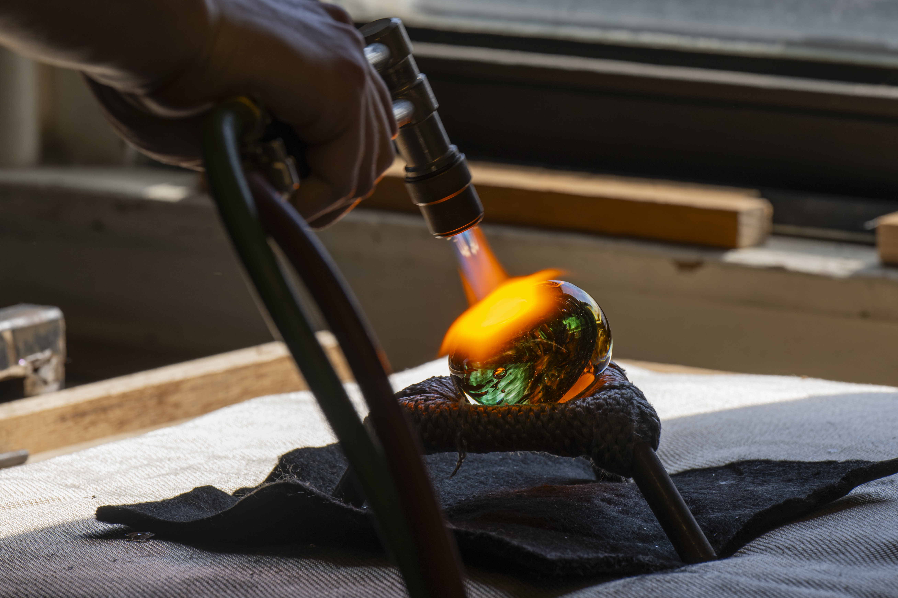

Glass + Creative Work
Heat, movement, light, and transformation.
Gallery
Add images to assets/images/gallery/, update assets/js/gallery-data.js, then run python3 scripts/analyze-gallery.py.

Glass + Creative Work
Add images to assets/images/gallery/, update assets/js/gallery-data.js, then run python3 scripts/analyze-gallery.py.